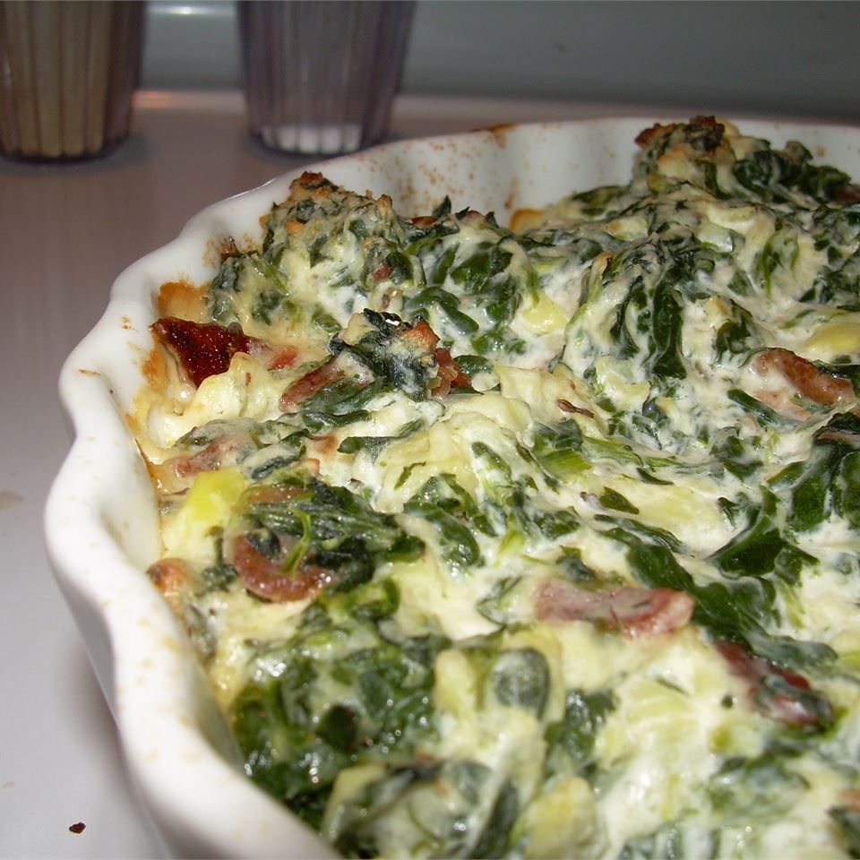

Hot Spinach and Artichoke Dip

Recipe Description
This rendition of a classic spinach and artichoke dip incorporates the author's special twist of adding bacon
bits - courtesy of her Nana.
Ingredients
- 8 slices of bacon
- 1 (10 ounce) package frozen chopped spinach, thawed and drained
- 1 (14 ounce) can quartered marinated artichoke hearts, drained
- 1 (5 ounce) container garlic-herb flavored cheese spread
- 1 cup grated Parmesan cheese
- 1 (8 ounce) container sour cream
- ½ cup mayonnaise
Steps
- Preheat oven to 400 degrees F (200 degrees C).
- Place bacon in a large, deep skillet. Cook over medium high heat until evenly brown.
Drain and crumble into a medium bowl.
- Mix spinach, artichoke hearts, garlic-herb flavored cheese spread, Parmesan cheese,
sour cream and mayonnaise into the bowl with bacon.
- Scoop mixture into a 7x11 inch baking dish. Bake in the preheated oven 20 minutes,
or until bubbly and lightly browned.